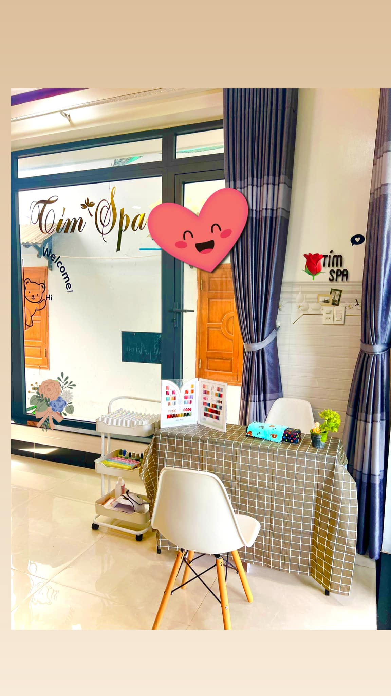
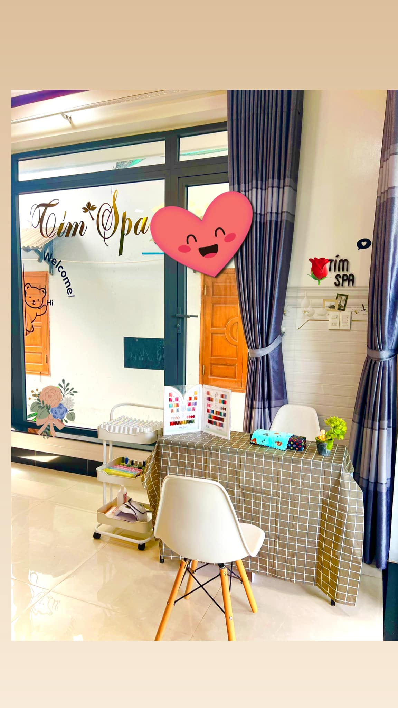

Welcome to (환영합니다)
Tím Spa & Nail
Experience youthful skin and perfect health at our spa. (당사 스파에서 어린 피부와 완벽한 건강을 경험해보세요.)
Experience youthful skin and perfect health at our spa. (당사 스파에서 어린 피부와 완벽한 건강을 경험해보세요.)
We take pride in providing high-quality health and beauty services. (저희는 고품질 건강 및 미용 서비스를 자랑스러워합니다.)
Tím Spa & Nail is a leading destination for health and beauty in the city, where we are committed to offering customers the best relaxation experience. (Tím Spa & Nail은 도시에서 건강과 미용을 위한 선두적인 목적지로, 우리는 고객에게 최고의 휴식 경험을 제공하기 위해 약속합니다.)
With a team of highly skilled and experienced spa professionals, we promise to provide top-notch spa and skincare services. We use quality skincare products to ensure that every therapy delivers the best results for your skin. (고기술과 경험이 풍부한 스파 전문가 팀으로, 우리는 최고의 스파 및 스킨케어 서비스를 제공하기로 약속합니다. 품질 높은 스킨케어 제품을 사용하여 모든 요법이 피부에 최상의 결과를 제공하도록 합니다.)
At Tím Spa & Nail, we focus not only on improving your appearance but also on comfort and relaxation. The luxurious ambiance, gentle music, and warm atmosphere will help you completely relax and forget about daily pressures. (Tím Spa & Nail에서는 단순히 외모를 개선하는 데에만 중점을 두지 않고 편안함과 휴식에도 중점을 둡니다. 호화로운 분위기, 부드러운 음악 및 따뜻한 분위기가 완전히 편안하게 만들어 일상의 압력을 잊게 해줄 것입니다.)
We are also proud of our professional, dedicated, and friendly staff. Each member of our team is trained extensively to ensure that you receive the best service from us. (우리는 또한 전문적이고 헌신적이며 친절한 스태프로 자부십니다. 우리 팀의 각 구성원은 철저한 교육을 받아 여러분이 우리로부터 최상의 서비스를 받을 수 있도록 합니다.)
 



Reviewed by (리뷰어):
Nguyen Thi Anh (Nguyễn Thị Anh)
"Excellent service! I am very satisfied with my experience at Tím Spa & Nail." (최고의 서비스! Tím Spa & Nail에서의 경험에 매우 만족합니다.)
Reviewed by (리뷰어):
 Lee Ji-eun (이지은)
Lee Ji-eun (이지은)
"Tím Spa & Nail is one of the best places for relaxation and beauty. Highly recommended!" (Tím Spa & Nail은 휴식과 아름다움을 위한 최고의 장소 중 하나입니다. 강력히 추천합니다!)"
Reviewed by (리뷰어):
Kim Ji-young (김지영)
"Amazing service! I was very satisfied with my experience at Tím Spa & Nail." (놀라운 서비스! Tím Spa & Nail에서의 경험에 매우 만족했습니다.)
Reviewed by (리뷰어):
Choi Min-ji (최민지)
"The spa experience here was truly fantastic. The staff is always smiling and friendly, and the service is top-notch." (여기에서의 스파 경험은 정말로 환상적이었습니다. 직원들은 항상 웃고 친절하며 서비스는 일류입니다.)
Reviewed by (리뷰어):
Tran Van Hai (Trần Văn Hải)
"The staff is very professional and friendly. Will come back!" (직원들은 매우 전문적이고 친절합니다. 다시 올 것입니다!)"
Reviewed by (리뷰어):
Nguyen Minh Quang (Nguyễn Minh Quang)
"Excellent!! Very professional and friendly service." (최고!! 매우 전문적이고 친절한 서비스.)
Reviewed by (리뷰어):
Pham Minh Chau (Phạm Minh Châu)
"Good service, comfortable space. Definitely coming back!" (좋은 서비스, 편안한 공간. 확실히 돌아올 것입니다.)
Reviewed by (리뷰어):
Park Min-ho (박민호)
"My experience at Tím Spa & Nail was truly excellent. The service is very professional, and the staff is very friendly." (Tím Spa & Nail에서의 나의 경험은 정말로 훌륭했습니다. 서비스는 매우 전문적이며 직원들은 매우 친절합니다.)
Address: Hamlet 2 Thuy Trieu, Cam Hai Dong, Cam Lam, Khanh Hoa 57000, Vietnam
Phone: (+84) 826 708 901
© 2023 Tím Spa & Nail. All rights reserved.